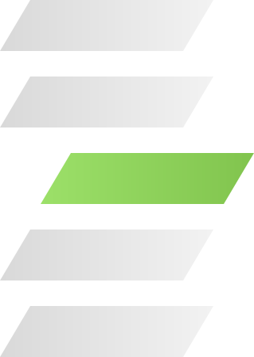

Paczka marki · wersja 1.0 · 2026-10-08
Workshift dla partnerów
Logo, kolory, pisma, motyw warstw, komponenty i szablony do materiałów, które przygotowujesz razem z Workshift. Plik DESIGN.md opisuje ten system w formacie, który czyta też agent AI.
01 · Kolory
Trzy tła i jeden akcent
Sage to domyślne tło. Czerń służy do sekcji kontrastowych, biel do kart i dokumentów. Lime występuje na widoku raz, na przycisku, wyróżnionym słowie albo przesuniętej warstwie. Kliknij próbkę, żeby skopiować hex.
02 · Typografia
Inter do tekstu, Plex Mono do etykiet
Na stronie i w dokumentach nagłówki mają wagę 400, a hierarchię buduje rozmiar i ciasny tracking. W grafikach social nagłówki składamy Inter 800 wersalikami, z jednym słowem na podkładzie lime.
Wdrażamy AI, które po prostu działa
Przebudowa bez burzenia. Nasz proces.
Automatyczna kategoryzacja dokumentów w biurze rachunkowym
Zaczynamy od jednego procesu, który zabiera zespołowi najwięcej czasu. Mierzymy go przed wdrożeniem i po nim.
Nasz proces · krok 02
02 / 05
Grafiki social
Czego AI nie zrobi · cz. 1
AI nie zwolni Twojej księgowej.
I bardzo dobrze.

Zasady
- 01Nagłówki na stronie i w dokumentach: Inter 400. Pogrubienie w treści to 500 i czerń.
- 02Etykiety, daty, numery i źródła: IBM Plex Mono wersalikami, tracking 0,1-0,2 em.
- 03Grafiki: Inter 800 wersalikami, jedno słowo na podkładzie lime, kropka lime na końcu.
- 04Zwykły dywiz "-" w każdym miejscu. Polskie cudzysłowy „…".
03 · Logo
Sygnet to trzy warstwy procesu
Warstwy to procesy firmy. Środkowa jest przesunięta, bo to ten proces zmieniamy. Górna i dolna zostają na miejscu, bo reszta firmy pracuje w tym czasie normalnie. Napis w plikach logo jest zamieniony na krzywe, więc wygląda tak samo w każdym programie.
Pole ochronne i wielkość
Pole ochronne
Wysokość jednej warstwy sygnetu z każdej strony, czyli około połowy litery W.
Minimum
Sygnet 24 px. Logo poziome 32 px wysokości na ekranie, 10 mm szerokości w druku (120 px).
Pozycja
Lewy górny albo lewy dolny róg, z marginesem co najmniej 20 px (7% krótszego boku w grafikach).
Czego nie robimy z logo
Nie obracaj i nie zmieniaj kąta pochylenia.
Nie rozciągaj proporcji.
Nie stawiaj na gradiencie ani zajętym zdjęciu bez podkładki.
Bez cieni, poświat i zmiany kolorów warstw.
04 · Motyw warstw
Warstwy z sygnetu jako dekoracja
Motyw warstw to jedyna dekoracja w systemie. Jedna warstwa jest przesunięta i tylko ona jest lime, tak jak w logo. Motyw dotyka krawędzi, czyli jest przycięty bokiem formatu albo stoi na granicy sekcji. Na jednym widoku używaj jednego motywu i nie obracaj go.
05 · Komponenty
Gotowe klasy w ws.css
Podepnij ws.css (z katalogiem fonts/ obok), dodaj klasę .wsk na kontener i używaj klas z prefiksem wsk-. Poniżej działające przykłady.
Tagi i wyróżnienie
Jeden proces, zmierzony przed i po wdrożeniu
Karta
Usługa · 01
Automatyzacja procesów
Łączymy narzędzia, które firma już ma, w jeden przepływ. Zespół pracuje w tych samych programach co wcześniej.
Komunikat i cytat
Ważne
Umowę powierzenia danych podpisujemy przed startem wdrożenia.
Kafle liczb · każda liczba ze źródłem
Tabela
| Etap | Co robimy | Co dostajesz |
|---|---|---|
| 01 · Diagnoza | Rozmowa i przegląd jednego procesu | Mapa procesu i wycena |
| 02 · Pilotaż | Wdrożenie na realnych danych | Działający przepływ i pomiar przed/po |
| 03 · Przekazanie | Szkolenie zespołu | Instrukcja i dostępy do kont |
06 · Szablony
Tła do grafik i szablon maila
Tła mają motyw przy prawej krawędzi i logo w lewym dolnym rogu. Tekst stawiasz w lewych dwóch trzecich. SVG do edycji w Figmie lub Illustratorze, PNG do Canvy i Google Slides.
Szablon maila
Tabele i style inline, 600 px, logo w PNG. Działa w Gmailu, Outlooku i Apple Mail.
Prompt dla agenta AI
Zbuduj [stronę / grafikę / slajd] dla Workshift. Trzymaj się DESIGN.md z załącznika: tokeny z nagłówka YAML są wiążące, a zasad z sekcji Do's and Don'ts nie łam. Teksty pisz według VOICE.md.
07 · Głos
Jak piszemy w imieniu Workshift
Pełne wytyczne są w VOICE.md. Poniżej sześć zasad, które sprawdzamy w każdym tekście przed publikacją.
01
Wynik przed technologią
Klient kupuje odpowiedź na zapytanie wysłaną w nocy. Nazwa modelu czy narzędzia schodzi na drugi plan.
02
Liczba ze źródłem
Każdy procent i każda liczba godzin ma pomiar, klienta albo badanie za sobą. Gdy źródła brakuje, opisujemy proces i pomijamy wynik liczbowy.
03
Spokojny ton
Nie piszemy o rewolucji AI i nie straszymy, że ktoś zostanie w tyle.
04
Per Ty, krótko
Zwracamy się per Ty, jak do partnera w biznesie. Piszemy krótkimi zdaniami w stronie czynnej.
05
Bez szablonów AI
Unikamy wyliczanek z trzech przeczeń, zwrotów typu „to nie X, to Y" i puent na końcu akapitu.
06
Dywiz zamiast pauzy
Zwykły "-" w zdaniach i zakresach: 2-8 tygodni.
08 · Pliki
Kod i dokumenty
Wszystkie pliki są też w paczce ZIP. Skrypt generuje tokeny z kodu strony workshift.pl, więc kolory i pisma zgadzają się ze stroną.
<link rel="stylesheet" href="https://www.workshift.pl/brand/ws.css"> <body class="wsk"> <p class="wsk-kicker">Nasz proces</p> <h2 class="wsk-h2">Przebudowa bez burzenia</h2> <a class="wsk-btn wsk-btn--primary" href="#">Umów rozmowę <span class="wsk-btn__dot">→</span></a> </body>